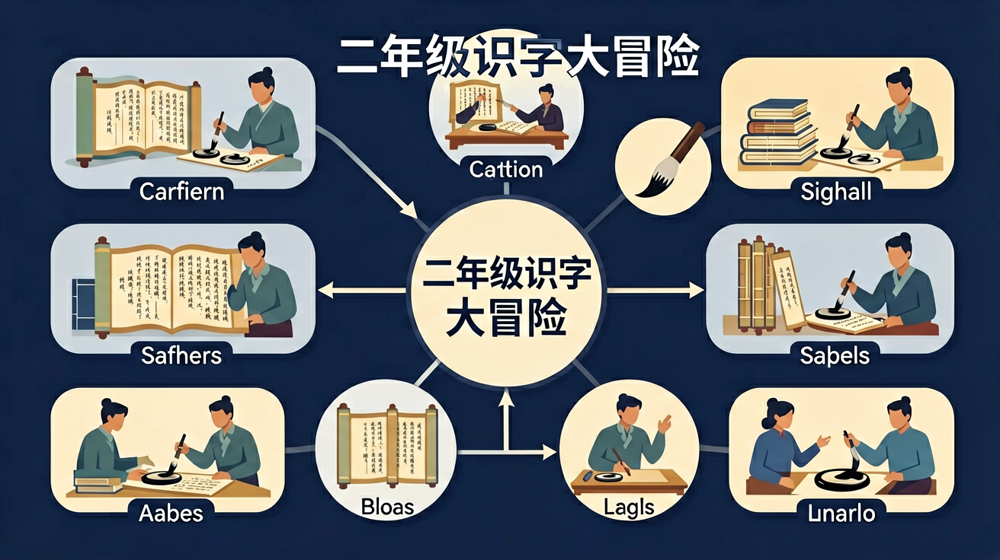

完成所有目标，获得🌟超级识字达人奖章！
❓ 为什么‘休’字要用人靠在树旁边表示休息呢？
❓ 这个字和昨天学的‘体’字长得好像，怎么区分呀？
❓ 老师，我写‘看’字时总把手的部分写成‘目’，怎么办？
学完这一课，这些问题你都能自信地回答。
And：学生已认识一些简单汉字
But：不知道汉字能通过加减笔画变成新字
Therefore：学会观察笔画变化就能认更多字
汉字像积木，加一笔减一笔就变新字！比如“日”字加一竖变成“目”（5笔），意思是眼睛；减一横变成“口”（3笔），意思是嘴巴。记住：笔画变化就像魔法，能让字的意思完全不同哦！
🌍 小朋友看，妈妈的“妈”字去掉“女”字旁，加上“马”字就变成“骂”字，两个字读音像但意思差超远！
“大”字加一点会变成什么？
点击每个字，听一听它的读音！
通过观察和比较，探究不同汉字的部首及其意义。
And：学生知道汉字能拆分
But：不理解偏旁和意思的关系
Therefore：掌握偏旁规律能猜生字意思
偏旁是汉字的“线索徽章”！比如“氵”旁的字多和水有关：“河”（8笔）是水流，“洗”（9笔）要用水。再比如“扌”旁的字和手有关：“打”（5笔）、“拍”（8笔）。记住偏旁就能当汉字小侦探啦！
🌍 吃冰淇淋的“冰”有“冫”旁，冻酸奶的“冻”也有它，原来两点水都和寒冷有关！
下面哪个字最可能和树木有关？
And：学生认识独体字
But：不明白相同部件叠加的规律
Therefore：发现重复结构能快速记复杂字
有些汉字是“复制粘贴”出来的！比如两个“木”叠成“林”（8笔），意思是很多树；三个“木”叠成“森”（12笔），森林就更大了。还有“人”字叠加：“从”（4笔）是跟着，“众”（6笔）是人多。叠得越多，意思越强！
🌍 班级里“众”人一起大扫除，比“从”前两个人干活快多啦！
三个“日”字叠起来是什么字？
And：学生能认读单个汉字
But：不会把字组合成新词
Therefore：学会汉字组合就像词语储蓄罐
汉字像硬币，存进“词语银行”能变新意思！“电”+“脑”=“电脑”（共17笔）不是会思考的电，而是计算机；“火”+“车”=“火车”（共10笔）不是着火的車，是呜呜跑的交通工具。组合时意思常会大变样！
🌍 “花生”不是会开花的生命，是好吃的坚果，和“学生”完全不一样呢！
“牛奶”这个词里，“牛”字贡献了什么意思？
‘休’=人+木，像人靠树休息
‘看’是手搭目上远望，‘明’是日月齐照表光亮
‘体’强调全身，‘休’强调暂停，比较人字旁位置
用动画展示手从眼前滑过的‘看’字演变
发现‘森’‘林’都有‘木’，猜猜与什么有关？
先独立作答，再点选项查看对错与错因。
下列哪个字的读音与'晴'相同？
下列哪个字的意思与'看'相关？
下列哪个字的部首是'日'？
‘____’字的部首是‘日’，表示与太阳有关。
答案：晴
'晴'字的部首是'日'，表示天气晴朗。
‘____’字的部首是‘目’，表示与眼睛有关。
答案：睛
'睛'字的部首是'目'，表示眼睛。
✅ 强调‘休’的‘木’像靠着的树
💡 形近字部件混淆
✅ 联想‘手搭凉棚’动作
💡 笔画空间关系错误
看到汉字，选出它的意思！
这个字是什么意思？
按正确顺序点击笔画！
按笔画顺序点击：
把汉字和对应的图意连起来！
把正确的字填进句子里！
颗星星收集到啦！
给我出5道汉字辨认题，把形近字或同偏旁字混在一起，让我来辨认和解释意思。
📌 你可以把上面的内容复制给 AI 助手（如 DeepSeek、ChatGPT），开始互动练习！
回忆：今天学了哪些关键词和规则？试着说出来。
用自己的话解释今天学的核心概念，不看书能说清楚吗？
用今天的知识解决一个实际问题，或写一个新例子。
把今天的知识与已有知识联系起来：有什么共同点？有什么区别？能不能自己创造一道新题？